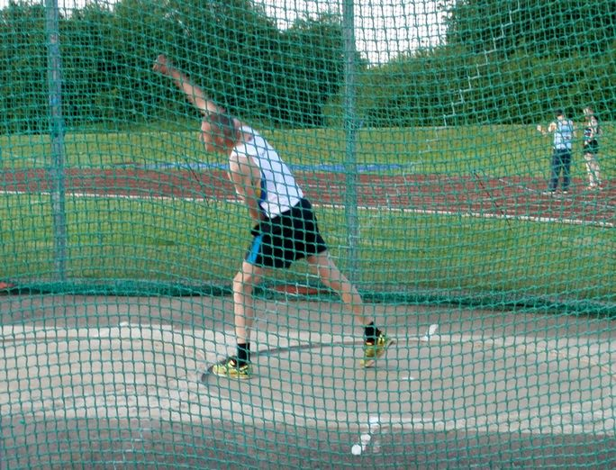

We fielded a team of six members at the Bromley meeting on 30 May and were able to cover every available event, with maximum opportunity for points. Consequently we came fourth in the overall meeting, our best position in the first three matches, and if we are able to repeat this at the next competition, we could raise our series standing from fifth to fourth as well.
We were successful in the sprints, with Martin White taking second place in the M35 100m in 13.4 seconds, a personal best which currently rates 46th in the M45 national rankings. Geoffrey Kitchener won the M60 100m in 15.1 seconds, well clear of competition; the remaining 100m races were undertaken by Duncan Cochrane and Ron Denney. Ron and Keith Dowson both stepped down to the M35 age group to fill the 800m slots, picking up valuable points and opening up the M50 race for Chris Desmond, who came second in 2 minutes 30.9 seconds, 55th in the national rankings. Keith’s 800m outing demonstrated considerable resilience, coming a few days after completion of a marathon.
Consistency was demonstrated in the field events, in which nearly all competing members came fourth: Martin in the M35 long jump, Geoffrey in the M50s; Ron in the M60 discus and Keith in the M50s. Duncan added a fifth place in the M35 discus. The final event was the 4 x 200m relay (Martin, Chris, Duncan and Geoffrey), in which the two leading teams soon became uncatchable, but there was a fairly close tussle for the remaining places, in which we came a respectable fourth.
I attach the results plus a couple of photos: Ron in the 400m and Keith in the discus.

The next match will again be at Bromley (the Norman Park track, Norman Park, Hayes Lane, Bromley, BR2 9EF), due to the non-availability of Gillingham. This is on Friday 13 June and the programme times are as follows (men’s events unless otherwise mentioned):
6.45 p.m. Shot put (the women also compete in the 200m sprint, high jump and javelin).
7.15 200m, including over 60s.
7.30 High jump, including over 60s.
(7.45 the women run 1500m.)
8.00 Javelin, including over 60s (the women also compete in the shot put).
8.15 1500m.
(8.45 the women run the 4x400m relay.)
9.05 4x400m relay.
I’d welcome hearing from members who can participate. Please let me know by Sunday 8 June, if possible, what events you would particularly like to do, and whether you would be prepared to fill in for any others as well. Any participation should earn at least a point, and the last meeting shows how these add up. Also, please remember, if we are over-subscribed for any event, it is generally possible to compete in it as a non-scoring guest.
If anyone wants or can offer a lift, do let me know.
Geoffrey
(